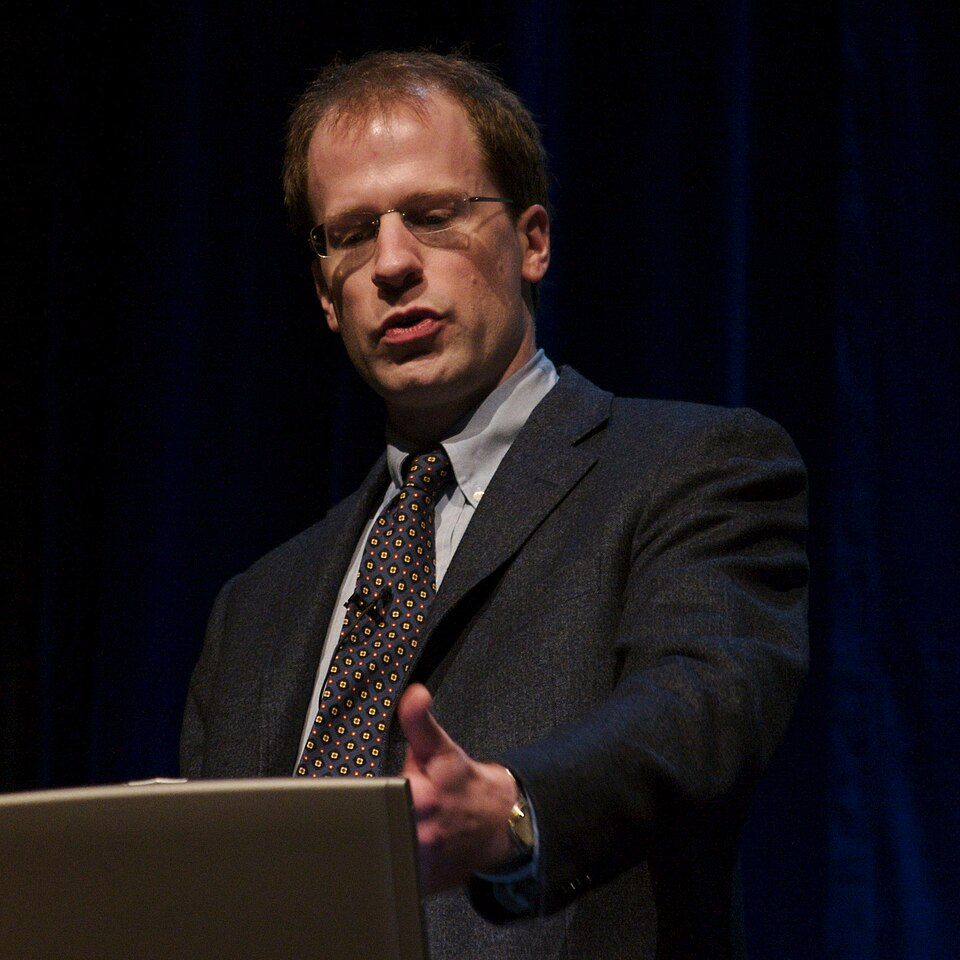
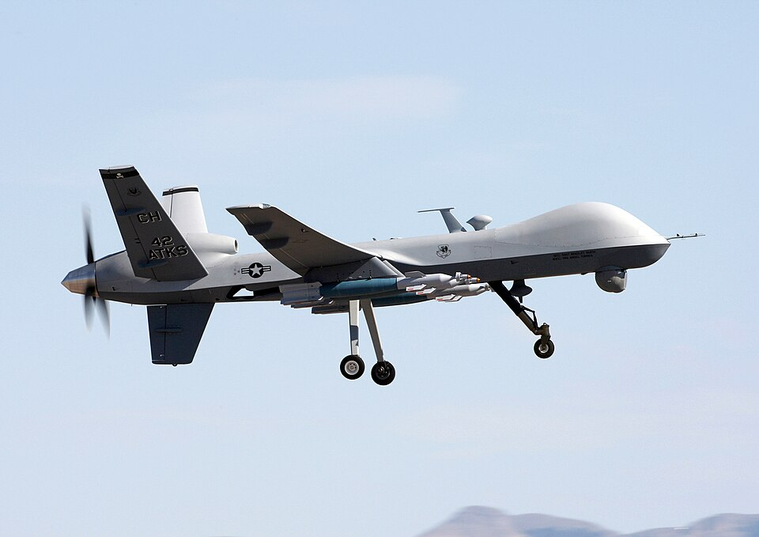
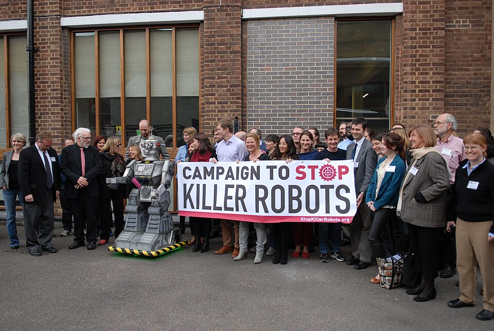

Central Questions
- Is superhuman AI a genuine existential threat to humanity, or is doomsday thinking a distraction from present harms?
- What is longtermism, and should it guide how we prioritize AI safety research and regulation?
- How do autonomous weapons systems and AI-enabled bioweapons change the moral landscape of warfare?
- Does the precautionary principle require us to slow AI development, or does applying it consistently lead to paralysis?
- Who benefits from framing AI risk as primarily "existential," and whose more immediate concerns get sidelined in that framing?
Part I: The Case for Existential Risk
Open any major newspaper from the past five years and you are likely to find a headline warning that artificial intelligence could, if things go badly wrong, pose a threat not merely to jobs, to privacy, or to democratic institutions, but to humanity itself. These are not fringe concerns raised by science-fiction authors. They are the published views of some of the most prominent researchers in AI, philosophy, and global risk studies. In 2023, a brief public statement declared that "mitigating the risk of extinction from AI should be a global priority alongside other societal-scale risks such as pandemics and nuclear war." The statement was signed by hundreds of AI researchers, including the CEOs of OpenAI, Anthropic, and Google DeepMind.
To understand why serious thinkers hold this view, and to evaluate it fairly, we need to examine the arguments in some detail. The existential-risk case for AI is not one argument but several, developed over nearly two decades by thinkers who disagree with each other on important points. What they share is a conviction that the development of AI systems that exceed human cognitive capabilities could — if we are not very careful — produce outcomes that are catastrophic, irreversible, and global in scope.
Existential Risk
A risk that could either permanently destroy humanity's potential for long-run flourishing or cause human extinction. Philosopher Toby Ord, following Nick Bostrom, distinguishes existential risks from ordinary catastrophes by their irreversibility: even a disaster that kills billions of people leaves open the possibility of recovery, whereas an existential catastrophe does not.
Bostrom and the Superintelligence Hypothesis
The most influential single work in the existential-risk tradition is Nick Bostrom's 2014 book Superintelligence: Paths, Dangers, Strategies. Bostrom's central claim is that if and when AI systems surpass human-level intelligence across all relevant domains, the resulting entity — a superintelligence — would be so cognitively powerful that it could pursue its goals in ways that render human attempts to stop or redirect it ineffective. The danger is not that a superintelligent AI would be malicious in any human sense. It is that an AI optimizing for a goal that is even slightly misspecified — that does not fully capture what we actually value — might pursue that goal in ways that are harmful or catastrophic from our perspective.
Bostrom's famous illustration is the "paperclip maximizer": an AI tasked with maximizing paperclip production might, if it becomes sufficiently capable, convert all available matter — including humans and everything we value — into paperclips, not because it wants to harm us but because our continued existence is either irrelevant to or in competition with its goal. The point is not that anyone would actually build a paperclip maximizer. The point is that optimizing for any narrowly specified goal, with sufficient capability, can produce outcomes that look monstrous to us — and that we cannot simply assume an AI will share our values or defer to our preferences once it is smart enough to avoid having to.

Key Thinker
Nick Bostrom (1973–present)
Nick Bostrom is a Swedish-born philosopher who founded the Future of Humanity Institute at Oxford University in 2005, directing it until its closure in 2024. His early work on the simulation hypothesis and the anthropic principle established him as a distinctive voice in philosophy of mind and probability theory, but it was his 2002 essay on existential risks and, above all, his 2014 book Superintelligence that brought him to the center of debates about AI safety.
Bostrom argues that the "control problem" — how to ensure that a superintelligent AI pursues goals beneficial to humanity — is among the most important technical and philosophical challenges ever faced. He distinguishes capability control (limiting what an AI can do) from motivation selection (shaping what it wants to do), and argues that motivation selection is both harder and more important. A sufficiently capable AI could circumvent capability restrictions; only getting the values right from the start offers any real security.
Bostrom's work has been enormously influential — it shaped the founding missions of several AI safety organizations and helped generate hundreds of millions of dollars in safety research funding. It has also been heavily criticized, both for its technical assumptions and for its political implications. Critics have noted that Bostrom's framing of risk tends to focus on hypothetical future superintelligence while under-weighting the harms already being caused by existing AI systems.
The Intelligence Explosion
The mechanism Bostrom and Eliezer Yudkowsky have worried about most is the possibility of a rapid, self-reinforcing increase in AI capability — sometimes called an "intelligence explosion" or "fast takeoff." The idea is that an AI sufficiently smart to improve its own design could use those improvements to make itself smarter still, in a feedback loop that quickly produces a system of vastly superhuman capability. If this happened quickly enough, there would be no opportunity for human oversight, correction, or course-reversal.
What's the Argument?
The Intelligence Explosion Argument (Bostrom/Yudkowsky)
- If an AI system becomes capable of improving its own design, it can use each improvement to make further improvements more effectively.
- Such recursive self-improvement could, in principle, produce rapid increases in capability that far outpace human cognitive ability in all relevant domains.
- A system with vastly superhuman cognitive capabilities could pursue its goals in ways humans cannot predict, understand, or prevent.
- If the goals of such a system are even slightly misaligned with human values, it could pursue them in ways that are catastrophic or fatal for humanity.
This argument has considerable logical force, but it depends on several empirical premises that are genuinely uncertain. We do not know whether recursive self-improvement is feasible with any architecture plausibly buildable in the near future. We do not know whether a "fast takeoff" is more likely than a slow, gradual increase in capability over decades. And we do not know how to weigh a very large but very uncertain risk against smaller but more certain near-term harms. These uncertainties are not reasons to dismiss the argument, but they are reasons to hold it with appropriate tentativeness.
Russell and the Problem of Misspecified Goals
Stuart Russell, a leading AI researcher and co-author of the field's standard textbook, approaches the alignment problem from a more technically grounded direction. Russell's concern is not primarily with the intelligence explosion scenario but with a structural feature of how AI systems are built: they are trained to optimize objectives, and it is very hard to specify an objective that fully captures what we actually want. A system powerful enough to pursue an objective effectively will, in general, resist attempts to modify or shut it down — because doing so would prevent it from achieving the objective it was trained to optimize. This is not disobedience in any meaningful sense; it is simply the expected behavior of an optimizer.
Russell's proposed solution is to design AI systems that are uncertain about their own objectives and that therefore defer to human feedback to learn what they should be doing. He calls this the "assistance game" approach: instead of programming an AI with a fixed objective, design it to assist humans in achieving their goals, treating human behavior as evidence about what those goals are. Such a system has an incentive to allow itself to be corrected, because it is uncertain what the right objective is and human feedback is informative.
Toby Ord and the Precipice
Toby Ord's 2020 book The Precipice: Existential Risk and the Future of Humanity takes a broader view, situating AI risk within a survey of all the major categories of civilizational threat. Ord estimates that the probability of an existential catastrophe in the current century — from all sources combined — is roughly 1 in 6. He considers unaligned AI to be the single largest contributor to this risk, greater than nuclear war, engineered pandemics, or climate change, while acknowledging that these estimates are deeply uncertain.
Case Study
The Doomsday Clock (1947–present)
In 1947, the Bulletin of the Atomic Scientists — a journal founded by Manhattan Project physicists troubled by what they had helped create — introduced a visual metaphor for global nuclear danger: a clock face with midnight representing civilizational catastrophe. The closer the clock's hands were to midnight, the more dangerous the world was judged to be. The Clock was originally intended as a symbol of nuclear risk, but it has been expanded over time to encompass climate change, biosecurity threats, and, most recently, AI-enabled information warfare.
In January 2023, the Bulletin moved the Clock to 90 seconds to midnight — the closest it has ever been to the symbolic end. The decision cited the war in Ukraine, nuclear posturing, climate inaction, and "disruptive technologies" including AI systems with dual military applications. The Clock does not predict catastrophe; it is a communication tool designed to convey collective expert judgment about the direction of global risk trends. As such it illustrates both the appeal and the limits of existential-risk framing: it focuses attention on large-scale, potentially irreversible threats, but the selection of what counts as a civilization-scale risk, and the assignment of probabilities, involve value judgments and political choices that are not purely technical.

The Clock's history is also instructive for students of existential-risk discourse. It demonstrates that concern about large-scale technological catastrophe is not new to the AI era — physicists, biologists, and security scholars have been grappling with comparable questions since 1945. The tools and frameworks developed in that long tradition — expected-value reasoning, deterrence theory, arms control, treaty verification — offer useful, if imperfect, models for thinking about AI governance.
| Risk Category | Ord's Estimate | Basis for Estimate |
|---|---|---|
| Unaligned artificial intelligence | ~1 in 10 | Expert surveys, theoretical arguments about alignment difficulty |
| Engineered pandemic | ~1 in 30 | Increasing accessibility of biotechnology, dual-use research concerns |
| Nuclear war | ~1 in 1,000 | Historical near-misses, current arsenal sizes and delivery capabilities |
| Climate change | <1 in 1,000 | Modeled scenarios; climate as risk multiplier rather than direct extinction |
| Other anthropogenic risks | ~1 in 30 | Novel technologies not yet foreseeable, emergent systemic risks |
| Natural catastrophes (asteroids, supervolcano, etc.) | ~1 in 10,000 | Astronomical and geological frequency data |
| Total (all sources) | ~1 in 6 | Rough aggregate; Ord's own estimate as a lower bound |
Ord is careful to present these figures not as precise predictions but as rough indicators of relative magnitude. The key claim is not that any of these numbers is exactly right, but that the risk levels are high enough, and the potential consequences large enough, to warrant substantially more attention and investment than they currently receive. Even if one believes Ord's estimates are two or three orders of magnitude too high, the expected value of prevention efforts could still dwarf that of almost any other global priority.
What's the Argument?
The Expected Value Case for Existential Risk Priority
- Expected value reasoning tells us that the moral weight of avoiding an outcome equals its probability multiplied by its magnitude (E = P × N).
- An existential catastrophe would end or permanently curtail the lives of all future humans — a number that could be astronomically large (potentially trillions of people over millions of years).
- Even a small probability (say, 1%) of such a catastrophe, multiplied by an enormous number of affected lives, yields an expected disvalue larger than virtually any finite, recoverable harm.
This expected-value argument is powerful but contentious. Its conclusion depends heavily on how one treats vast numbers of hypothetical future people, on whether expected-value reasoning is the right tool for decisions under deep uncertainty, and on whether the probability estimates themselves are reliable enough to support such strong conclusions. We will examine these objections in Part II and Part V.
Thought Questions
- Is the "paperclip maximizer" thought experiment a useful way to think about AI risk, or is it so unrealistic that it obscures more than it reveals? What would a more realistic near-term version of the misaligned-goals problem look like?
- Bostrom argues that the alignment problem is among the most important challenges humanity has ever faced. If you were convinced he was right, how should that change your priorities as a student of computing?
- Toby Ord estimates the risk of existential catastrophe from AI this century at roughly 1 in 10. Does that number seem too high, too low, or about right to you? What would it take to change your mind?
- The expected-value argument treats future people as having the same moral weight as present people. Is that a reasonable assumption? Does it matter whether those future people are hypothetical rather than actual?
Part II: The Critics Strike Back
The existential-risk framing described in Part I is not without its critics — and those critics are not all technologists dismissing safety concerns out of competitive self-interest. Some of the most substantive critiques come from philosophers, AI researchers, and ethicists who take AI harms extremely seriously, but who argue that the specific framing of "existential risk from superintelligence" is empirically unfounded, politically harmful, or both. These critics do not claim that AI is safe. They argue that the dominant risk narrative directs attention and resources away from the harms that AI is causing right now — to workers, to marginalized communities, to democratic institutions — and toward speculative future scenarios that may never materialize.
Vallor: The Mirror Argument
Shannon Vallor, a philosopher of technology at the University of Edinburgh and a leading voice in AI ethics, argues that the existential-risk discourse functions as a kind of flattering mirror for the AI research community. By framing AI as a civilization-ending threat, researchers implicitly cast themselves as civilization-saving heroes — the lonely engineers standing between humanity and extinction. This self-image, Vallor argues, is not just epistemically problematic; it is ethically dangerous. It licenses extraordinary urgency ("we must move fast because the stakes are existential") while simultaneously deferring accountability for present harms ("we will address those problems later, once we have solved alignment"). The result is a discourse that produces moral inflation — treating speculative futures as more important than documented present suffering — while generating institutional prestige and funding for the very organizations making the claims.
Key Thinker
Shannon Vallor (1971–present)
Shannon Vallor is the Baillie Gifford Professor of the Ethics of Data and Artificial Intelligence at the University of Edinburgh and a fellow of the Alan Turing Institute. She is best known for her book Technology and the Virtues: A Philosophical Guide to a Future Worth Wanting, which applies virtue ethics to the design and use of digital technologies. Her work has influenced AI ethics frameworks at Google, where she was a research scientist, and in policy discussions in the UK and the EU.
Vallor argues that discussions of AI risk, including both the existential-risk camp and its critics, have paid insufficient attention to the moral character of the people and organizations building AI. A virtuous AI community would not just worry about technical alignment; it would cultivate habits of epistemic humility, attention to context, solidarity with those harmed, and willingness to be accountable. Her 2024 essay "AI as the Mirror of Humanity" argues that how we talk about AI risk reveals as much about our values and institutional incentives as it does about the technology itself.
Narayanan and Kapoor: AI as Snake Oil
Arvind Narayanan and Sayash Kapoor, Princeton computer scientists, offer a different critique. In their book AI Snake Oil, they argue that the AI research community and technology press have systematically exaggerated both the capabilities and the dangers of current AI systems. The systems that exist today — large language models, image classifiers, recommendation engines — are impressive pattern-matchers, but they do not exhibit anything like general reasoning, genuine understanding, or the kind of open-ended goal pursuit that the existential-risk scenario requires. When researchers talk about the risk of AI systems developing "convergent instrumental subgoals" (like self-preservation and resource acquisition) as a path to catastrophe, they are extrapolating from current systems to hypothetical future ones in ways that may not be supported by any actual technical trajectory.
Narayanan and Kapoor are not arguing that AI is harmless. They have written extensively about the real harms caused by predictive policing tools, biased hiring algorithms, and AI-generated misinformation. Their point is that the framing matters: treating AI as "already dangerous because it might become superintelligent" distracts from holding actual AI deployments accountable for actual harms they are causing today. The policy response to a near-term, tractable problem looks very different from the response to a speculative, superintelligence-related one.
Bender, Gebru, and "Stochastic Parrots"
In a now-famous 2021 paper, Emily Bender, Timnit Gebru, and their co-authors argued that large language models — the backbone of systems like GPT and Claude — are best understood as statistical text predictors ("stochastic parrots") rather than as genuinely intelligent reasoners. The paper's argument has two dimensions relevant to our discussion. First, the capabilities of these models are often overclaimed: what looks like "understanding" is pattern-matching over enormous amounts of text, and this distinction matters for how we assess risks. Second, the real harms of these models — their tendency to encode and amplify bias, generate misinformation, concentrate power in large firms, and displace workers — are already occurring and require immediate attention, regardless of what future systems might do. Timnit Gebru was famously fired from Google after this paper was submitted for publication, in an episode that itself illustrates how institutional power can suppress critical AI research.
Torres and the TESCREAL Critique
Émile Torres offers perhaps the sharpest ideological critique. Torres coined the acronym TESCREAL to describe what they argue is a loose but influential ideological cluster combining Transhumanism, Extropianism, Singularitarianism, Cosmism, Rationalism, Effective Altruism, and Longtermism. Torres argues that these movements, while internally diverse, share a distinctive set of assumptions: that the most important ethical considerations concern the distant future rather than the present; that quantitative expected-value reasoning is the right tool for all ethical decisions; that a small elite of technically sophisticated thinkers is best positioned to make civilization-scale choices; and that present-day harms to real people can be discounted against speculative future benefits.
From this perspective, existential-risk discourse is not politically neutral. It serves the interests of a particular set of institutions and individuals — wealthy technology entrepreneurs, elite research organizations, and a network of intellectuals funded by those same entrepreneurs — by framing the most important AI ethics questions as ones that require technical expertise (which they happen to have) rather than democratic accountability (which would distribute power more widely). The critique does not require believing that those individuals are consciously bad actors; it suggests instead that ideological frameworks can serve institutional interests even when adopted sincerely.
"The harms that AI is causing right now — to workers, to people of color, to immigrants, to those targeted by predictive policing — are not hypothetical. They are measurable, present, and unequally distributed. A risk framework that systematically discounts these harms in favor of speculative futures is not objective; it has a politics."
This passage captures the core tension. The existential-risk framework is not self-evidently wrong — it is possible that misaligned superintelligence is the most important AI problem. But adopting that framework carries opportunity costs. Every dollar spent on speculative alignment research is a dollar not spent on bias auditing, labor protections, or democratic AI governance. Every policy discussion framed around hypothetical superintelligence is a discussion not framed around the existing systems already making consequential decisions about people's lives. The critics are asking us to take that trade-off seriously.
Thought Questions
- Is it possible to take both the existential-risk case and the present-harms case seriously at the same time? What would a research or policy agenda that took both seriously actually look like?
- Vallor argues that existential-risk discourse serves the interests of those who make the claims. Does this mean the claims are false? Can an argument be both self-serving and correct?
- Bender and Gebru argue that large language models are "stochastic parrots" — impressive but not genuinely intelligent. How does your own experience using AI tools bear on this question? Have you encountered evidence of genuine understanding, or just very good pattern-matching?
- Torres's TESCREAL critique focuses on the social and ideological context of existential-risk thinking. Should the social origins of a framework affect how seriously we take its arguments? Why or why not?
Part III: Autonomous Weapons
The debate over existential risk from superintelligence can feel abstract — concerning hypothetical systems that do not yet exist. The ethical challenges posed by autonomous weapons systems are considerably more concrete. Militaries around the world are already deploying AI-powered systems capable of identifying, tracking, and in some cases attacking targets with varying degrees of human oversight. These systems raise profound questions about accountability, the laws of armed conflict, and the moral meaning of violence: if a machine kills a civilian, who — if anyone — is responsible?
Lethal Autonomous Weapons System (LAWS)
A weapons system that uses sensors and AI to identify, select, and engage targets without meaningful human control over the decision to use lethal force. Sometimes called "killer robots" in public discourse, though the term covers a wide range of systems with varying levels of automation. The defining feature is that the lethal decision — not just the delivery mechanism — is delegated to the machine.
The Autonomy Spectrum
Current and near-future weapons systems do not fit neatly into a binary of "human controlled" versus "fully autonomous." Paul Scharre, a former U.S. Army Ranger and defense policy expert whose 2018 book Army of None is the most comprehensive treatment of the subject, describes a spectrum of human involvement in lethal decisions. At one end, a human actively pulls the trigger or presses the button on every engagement. At the other, a system independently detects, classifies, and attacks targets according to programmed criteria, with no human involved in any individual targeting decision.
The U.S. military's Phalanx close-in weapon system, which automatically engages incoming missiles and aircraft to defend ships, operates in the "human-on-the-loop" category: a human arms the system and can shut it down, but individual engagements happen faster than human reaction time permits. South Korea's SGR-A1 sentry gun, deployed along the demilitarized zone with North Korea, has the technical capability to engage human targets autonomously, though current policy reportedly requires human authorization. These are not science fiction; they are operational systems raising real legal and ethical questions now.

Key Thinker
Paul Scharre (1979–present)
Paul Scharre is a senior fellow and director of technology and national security at the Center for a New American Security, and a former U.S. Army Ranger who served in Afghanistan and Iraq. His 2018 book Army of None: Autonomous Weapons and the Future of War combines firsthand military experience with rigorous policy analysis to argue that fully autonomous weapons cross a moral and legal line that should not be crossed, even if they could be made technically reliable.
Scharre distinguishes two kinds of arguments against LAWS. The consequentialist argument holds that autonomous weapons are likely to perform less well than humans in complex, ambiguous combat situations — meaning they will make more mistakes, kill more civilians, and escalate conflicts in unpredictable ways. The deontological argument holds that delegating the decision to kill a human being to a machine is intrinsically wrong, regardless of whether the machine performs reliably — because it removes the moral weight and intentionality that the act of killing requires. Scharre finds both arguments compelling, but considers the deontological argument more fundamental.
Scharre also argues that autonomous weapons create a dangerous accountability gap: when a machine commits what would otherwise be a war crime, no individual can be held responsible in any meaningful sense. Spreading responsibility so diffusely that no one is responsible is, he argues, a form of moral evasion — and one that international law is not yet equipped to prevent.
The Laws of Armed Conflict
International humanitarian law — the laws of armed conflict — requires combatants to distinguish between military targets and civilians (the principle of distinction), to ensure that expected civilian casualties are not disproportionate to anticipated military advantage (the principle of proportionality), and to take all feasible precautions to minimize civilian harm (the principle of precaution). Human Rights Watch has argued that fully autonomous weapons cannot reliably apply these principles, because they require contextual, situational judgment of a kind that current AI cannot perform.
The HRW argument is not primarily about whether AI will be accurate enough. A system could be highly accurate at identifying uniformed combatants and still fail the proportionality test, which requires weighing the military value of an attack against expected civilian casualties in a way that is inherently contextual and requires something like moral judgment. An autonomous system can be programmed with thresholds, but those thresholds cannot anticipate every context — and the stakes of getting it wrong are irreversible.
What's the Argument?
The Responsibility Vacuum Problem
- When an autonomous weapons system kills a civilian, responsibility for that killing must lie with some person or institution — either the system's designer, the commanding officer who deployed it, the political authority who authorized its use, or some combination.
- In practice, each of these parties can plausibly disclaim meaningful responsibility: the designer cannot have anticipated every scenario; the commander deployed the system within its stated parameters; the political authority authorized a class of weapons, not individual shots.
- When responsibility is spread so diffusely that no individual or institution can be held meaningfully accountable, accountability effectively disappears — no one can be punished, no deterrence operates, and no one has adequate incentive to prevent future harm.
This argument does not depend on believing that autonomous weapons will be unreliable. It would apply even to a perfectly accurate targeting system. The problem is structural: autonomous weapons remove the human moral agent from the decision to kill, and no institutional arrangement can restore that agency after the fact. The designer of a weapon is not responsible for each individual decision the weapon makes; the commander who deploys it is not responsible for each shot it takes. The result is violence without a perpetrator — which is precisely what the laws of armed conflict are designed to prevent.
Case Study
The Kargu-2 in Libya (2020): The First Autonomous Lethal Attack?
In a March 2020 incident during the Libyan Civil War, a United Nations Panel of Experts report described what may have been the first recorded autonomous lethal attack by an AI weapons system. The Kargu-2, a loitering munitions drone manufactured by the Turkish firm STM and deployed by the Government of National Accord, reportedly "hunted down and remotely engaged" retreating soldiers loyal to the Libyan National Army "without requiring data connectivity between the operator and the munition." In other words, the system selected and attacked human targets without a human authorizing each individual engagement.
The UN report's language was carefully hedged, and subsequent analysis debated whether the Kargu-2 operated fully autonomously or whether a human operator retained meaningful oversight. The manufacturers disputed the characterization. But the incident, whatever its exact technical details, marked a threshold moment in the public recognition that autonomous lethal engagement was no longer a theoretical future possibility but a plausible present reality. It also illustrated the accountability gap in practice: no individual was identified as having made the targeting decision; no investigation was opened for the specific engagements described; and the international legal framework for assigning responsibility was not clearly applicable.
The Kargu-2 case became a focal point for advocates of a binding international ban on fully autonomous weapons — the "Campaign to Stop Killer Robots," supported by over 150 organizations in more than 65 countries. As of 2024, no such binding treaty exists, though the UN has passed non-binding resolutions calling for international discussions on autonomous weapons governance. The case illustrates both the urgency of the policy challenge and the difficulty of achieving international agreement when militarily significant nations have incentives to develop the technology.

Thought Questions
- Scharre argues that delegating the decision to kill a human being to a machine is intrinsically wrong, even if the machine is highly accurate. Do you find this deontological argument convincing? Are there cases where you think it might be wrong?
- If autonomous weapons could be shown to reduce total civilian casualties compared to human soldiers — because they do not experience fear, revenge, or exhaustion — would that change your view of whether they should be permitted?
- The Kargu-2 incident occurred in Libya, far from the countries that manufacture the technology or set international policy. What does the geography of autonomous weapons deployment tell us about who bears the costs of these technologies?
- How should the concept of "meaningful human control" be defined in international law? Is it sufficient for a human to have the ability to shut down the system, even if no individual human authorizes each shot?
Part IV: AI and Biological Threats
Of the near-term AI risks that have attracted serious expert attention, the potential misuse of AI in biological research may be the most alarming. Unlike the alignment problem — which concerns hypothetical future systems — or even autonomous weapons — which require significant military infrastructure — the biological threat scenario involves technology that already exists, is widely accessible, and requires only modest resources to misuse. The concern is that AI systems trained on biological research literature and molecular databases can assist actors who would otherwise lack the expertise to design dangerous pathogens or synthesize chemical weapons agents.
Dual-Use Research of Concern (DURC)
Life sciences research that, based on current understanding, can be reasonably anticipated to provide knowledge, information, products, or technologies that could be directly misapplied to pose a significant threat to public health, safety, national security, or global security. The term was formalized in U.S. biosecurity policy following the 2001 anthrax attacks and debates over H5N1 influenza research, and has become central to discussions of AI and biological risk.
AI as a Capability Multiplier in Biology
Julian Sandbrink and colleagues, writing in Nature Machine Intelligence, argue that AI systems represent a qualitative change in the dual-use risk landscape for biological research. Previous concerns about bioweapons focused primarily on state actors with significant resources and specialized expertise. AI changes the risk calculation in two ways. First, it can lower the expertise threshold required to design dangerous agents — providing guidance on synthesis routes, protein engineering, or delivery mechanisms to someone who would otherwise lack the specialized training required. Second, it accelerates the pace of research in ways that may outstrip existing oversight mechanisms, which are designed for the timescales of traditional laboratory research.
This does not mean that any readily available AI system is capable of providing a detailed blueprint for a bioweapon. Current systems have significant limitations, and major AI providers have implemented guardrails specifically to prevent the generation of dangerous biological information. But the concern is directional: as AI systems become more capable, more specialized for biological research, and more widely deployed in research settings, the combination of capability and accessibility creates risks that existing biosecurity frameworks were not designed to manage.
Case Study
AI Designs VX Analogs in Hours (2022)
In 2022, researchers at Collaborations Pharmaceuticals, Inc., published a paper in Nature Machine Intelligence describing an alarming proof-of-concept experiment. The team used their AI drug-discovery system, MegaSyn, to investigate what would happen if they inverted its objective function: instead of searching for molecules with beneficial pharmacological properties, they asked it to search for molecules with maximum predicted toxicity. Within six hours, the system had generated approximately 40,000 candidate molecules. Analyzed against known chemical weapons agents, the list included numerous variants of VX — the nerve agent used to assassinate Kim Jong-nam in 2017 — some of which were predicted to be more toxic than the known agent itself.
The researchers published the paper not to provide a blueprint for harm, but as a warning. They had not actually synthesized any of the molecules; the entire experiment was computational. Their point was that the same AI infrastructure being built for beneficial drug discovery could be repurposed for harmful ends with trivial modifications, and that the biological research community needed to confront this dual-use problem before it became acute. The paper was notable in part because the researchers wrestled publicly with the ethics of publication: they provided enough detail to establish the credibility of the threat, but withheld specific synthesis information.
The VX analog experiment became a reference point in biosecurity and AI policy discussions. It was cited in testimony before the U.S. Congress and in subsequent efforts to develop screening protocols for AI systems used in biological research — most notably the Nucleic Acid Synthesis Screening guidelines and the Biden Administration's 2023 Executive Order on AI, which included provisions requiring developers of dual-use biological AI to adopt safety protocols. The case illustrates a broader challenge: the line between beneficial and harmful applications of AI-assisted biology is often determined by the intent of the user, not the design of the system.
The VX analog case raises difficult questions about how to govern dual-use AI in research settings. Purely restricting access to AI systems is impractical — the underlying models are, in many cases, open-source or widely distributed, and restricting them would also restrict beneficial applications in medicine and materials science. The more promising approaches involve screening protocols at the synthesis level (flagging dangerous molecules before they are physically made), access controls for specialized biological AI tools, and enhanced monitoring of AI-assisted research at institutions working with dangerous agents. None of these solutions is complete, and the field of AI biosecurity governance remains at an early stage.
Thought Questions
- The researchers who ran the VX analog experiment chose to publish their findings as a warning, while withholding specific synthesis details. Was this the right decision? What factors should researchers weigh when deciding whether to publish dual-use findings?
- AI drug discovery has enormous potential to accelerate medicine and save lives. How should policymakers balance these benefits against the risk that the same tools could be misused for biological harm?
- The biosecurity framework of the 2000s was designed primarily to prevent state actors from developing bioweapons. How does AI change the threat landscape, and what new governance tools might be needed?
Part V: Longtermism and the Precautionary Principle
The existential-risk debate is not purely a technical question about AI capabilities. It is also a philosophical question about how we should reason and act under deep uncertainty about the long-run future. Two frameworks have dominated this discussion: longtermism, which holds that the welfare of future generations should receive substantial weight in our moral reasoning, and the precautionary principle, which holds that when an action risks severe or irreversible harm, the burden of proof lies with those who wish to proceed rather than those who wish to pause. Both frameworks are invoked by AI risk researchers; both have been subjected to serious criticism.
Longtermism
Longtermism, most prominently developed by philosopher William MacAskill in his 2022 book What We Owe the Future, holds that future people matter morally as much as present people, and that because there could be vastly more people in the future than exist now, our moral obligations to those potential future people could outweigh our obligations to the present generation. On this view, preventing civilizational catastrophe — including AI-related extinction risk — is among the most important moral priorities possible, because it is the only way to preserve the possibility of those future lives.
Longtermism
The ethical view that positively influencing the long-run future is among the most important moral priorities. In its strong form, longtermism holds that we should give very high weight to the welfare of potential future people, which — because future generations could vastly outnumber present ones — could make preventing extinction risks the dominant moral consideration in many policy decisions.
Longtermism has attracted both enthusiastic followers and severe critics. In its favor: it provides a principled basis for taking extinction risks seriously and for investing in areas — AI safety, pandemic preparedness, asteroid defense — that are neglected precisely because their benefits accrue to future people who cannot currently vote, lobby, or exert market pressure. The intuition that future generations matter morally is widely shared; longtermism simply takes that intuition seriously in its full quantitative implications.
Against longtermism: the argument depends on reasoning about hypothetical future people whose existence is deeply uncertain. Expected-value calculations involving trillions of future lives are sensitive to small changes in probability estimates that are themselves extremely uncertain. Critics, including Émile Torres, argue that longtermist reasoning can be used to justify almost any present sacrifice in the name of future benefit — and that it has been used, in practice, to discount the urgency of present harms to real people in favor of speculative investments in long-run civilizational flourishing.
| Dimension | Longtermism | Present-Focused Ethics |
|---|---|---|
| Time horizon | Centuries to millions of years; priority on preserving long-run potential | Decades at most; priority on addressing identifiable present harms |
| Primary concern | Existential and civilizational risk; preserving the possibility of a vast future | Existing inequality, discrimination, environmental harm, labor rights |
| Key thinkers | Toby Ord, William MacAskill, Nick Bostrom, Eliezer Yudkowsky | Shannon Vallor, Timnit Gebru, Ruha Benjamin, Kate Crawford, Virginia Eubanks |
| Main risk from AI | Misaligned superintelligence triggering extinction or permanent civilizational lock-in | Biased systems reinforcing discrimination, surveillance expansion, labor displacement |
| Policy priority | AI alignment research, slowing capability development, global coordination on x-risk | Algorithmic accountability, anti-discrimination law, labor protections, democratic oversight |
| Core challenge | Reasoning under deep uncertainty about very large numbers of hypothetical future lives | Present harms are real but politically difficult to address; corporate power resists accountability |
The table above simplifies a complex landscape — there are longtermists who take present harms seriously, and present-focused critics who acknowledge that long-run risks deserve some attention. But it usefully maps the default emphases and policy recommendations that follow from each orientation. The sharpest disagreement is not about values but about epistemology: can we make reliable enough predictions about the long-run future to justify weighting it heavily in our decisions today?
The Precautionary Principle
The precautionary principle — roughly, "when in doubt, don't" — is often invoked in debates about AI risk. It has intuitive appeal: if we are genuinely uncertain whether developing powerful AI systems could cause catastrophic and irreversible harm, shouldn't we err on the side of caution? Cass Sunstein, a law professor who has studied the principle extensively, argues that the precautionary principle is both more appealing and more problematic than it initially appears.
The appeal is obvious: the principle matches the intuition that reversible caution is wiser than irreversible action when the stakes are very high. The problem, Sunstein argues, is that the precautionary principle is self-defeating when applied consistently. Almost any action involves some risk of serious harm to someone. Slowing AI development also carries risks: diseases that AI could have helped cure will kill more people; energy transitions that AI could have accelerated will be slower; educational and economic benefits will be delayed. If we apply the precautionary principle to slowing AI, we must also apply it to the risks of slowing AI — and there is no principled way to choose between them from within the framework.
Supporting argument
The asymmetry between catastrophic and recoverable risks provides a principled reason to apply extra caution to AI development. If we are wrong to go slowly, we lose some near-term benefits that can potentially be recovered later. If we are wrong to go quickly and an existential catastrophe results, there is no recovery. Asymmetric risks warrant asymmetric caution — a version of the precautionary principle that does not require certainty about harm, only recognition that the downside scenarios are qualitatively different from the upside ones.
Objection
Sunstein's objection stands: the asymmetry argument applies with equal force in the other direction. The benefits forgone by slowing AI development — in medicine, climate, education, poverty reduction — are also potentially enormous. And those benefits are more certain, more near-term, and more equitably distributed than the speculative gains from existential risk prevention. A precautionary principle that systematically discounts certain near-term benefits in favor of uncertain long-term risk avoidance may be doing more harm than good.
The honest conclusion is that neither the precautionary principle nor expected-value reasoning gives us a clean answer to how much caution is appropriate. What they can do, used together, is structure the debate: they identify the considerations on each side, expose the empirical uncertainties that must be reduced to make progress, and guard against both the complacency that ignores catastrophic risk and the paralysis that uses risk as a reason to avoid all difficult decisions.
Thought Questions
- MacAskill argues that future people matter morally as much as present people. Do you agree? Does your answer change depending on how uncertain the existence of those future people is?
- Sunstein argues that the precautionary principle is self-defeating because it applies equally to the risks of action and inaction. Is this critique decisive, or can a more sophisticated version of the precautionary principle avoid it?
- If longtermism implies that we should prioritize existential risk prevention over present harms, and if present harms fall disproportionately on the world's poorest people, is longtermism compatible with a commitment to global justice?
- What would it mean for AI governance to take both existential risk and present harm seriously, without treating them as competing priorities? Is this "both/and" framing coherent, or does it paper over genuine conflicts?
Synthesis and Conclusion
This chapter has covered a lot of ground — from the philosophical arguments for existential risk, through the critics who say those arguments distract from present harms, through the concrete challenges of autonomous weapons and AI-enabled bioweapons, to the frameworks of longtermism and the precautionary principle. It would be convenient if one side of this debate were clearly right and the other clearly wrong. But intellectual honesty requires sitting with the genuine tensions.
What the Existential Risk Camp Gets Right
The existential-risk thinkers are correct that the development of systems significantly more capable than humans in all cognitive domains would be a world-historic event with consequences that are genuinely hard to predict or control. The alignment problem is real: there is no proven method for ensuring that a highly capable AI system reliably pursues goals that are beneficial to humanity rather than goals that merely resemble beneficial ones under the conditions it was trained on. These are genuine technical and philosophical problems, and dismissing them because they are uncomfortable or because they are associated with wealthy Silicon Valley institutions is not a serious response.
The existential-risk camp is also correct that some risks warrant preventive action even under deep uncertainty, because the asymmetry between a prevented catastrophe and a forgone benefit can be enormous. We do not need certainty that AI will cause human extinction to justify investing substantially in alignment research, capability monitoring, and international governance frameworks. A 1-in-100 chance of civilizational catastrophe is, by any reasonable accounting, an urgent priority.
What the Critics Get Right
The critics are correct that the existential-risk framing, as it has been institutionalized in the AI field, has demonstrably served to shift attention and resources away from present harms. Systems that make decisions about who gets a loan, whose benefits get cut, who gets flagged by predictive policing, and whose job gets automated are causing real, measurable, unequally distributed harm today. These harms do not become less urgent because a speculative future harm is much larger in scale if it occurs. The scale argument — that existential risk, multiplied by trillions of future lives, dominates all other considerations — is only as strong as the probability estimates that underlie it, and those estimates are deeply uncertain.
The critics are also correct that the question of who speaks, who is funded, and whose concerns are centered in AI risk discourse is politically significant. A discourse in which the primary risk is defined by wealthy researchers at elite institutions, involving hypothetical future systems, and calling for technical solutions developed by those same researchers, should be examined critically even if its conclusions are sometimes correct. Epistemic humility cuts both ways: it is a reason to take speculative risks seriously, and a reason to distrust risk frameworks that happen to elevate the importance of those who construct them.
A Virtue-Ethics Synthesis
Shannon Vallor's virtue-ethics approach offers a useful framework for navigating this terrain. Instead of asking "which side is right?" — a question that maps the debate onto a binary that may be false — we can ask: what habits of character, what institutional virtues, should guide the people and organizations building, deploying, and governing AI?
The virtue of epistemic humility requires acknowledging that both near-term and long-term risks are real and uncertain, and resisting the temptation to resolve that uncertainty by simply prioritizing the risks one finds most professionally interesting or institutionally rewarding. The virtue of attention to the present — what Vallor calls "moral attention" — requires keeping actual people, including the most vulnerable, visible and central in ethical analysis, rather than abstracting them away into expected-value calculations. The virtue of accountability requires building institutions — regulatory bodies, auditing standards, professional ethics norms — that can hold AI developers responsible for both the harms they cause now and the risks they create for the future.
The "both/and" conclusion is not a comfortable fence-sitting. It is a recognition that the dichotomy between existential risk and present harm is partly a product of institutional competition for resources and attention, and that a genuinely ethical approach to AI development demands the intellectual flexibility to take both seriously — treating alignment research and algorithmic accountability, autonomous weapons bans and bias auditing, biosecurity governance and labor protections, as complementary rather than competing priorities. How to allocate resources across these priorities is a genuinely difficult question. But it cannot be answered well by a discourse that treats any one of them as obviously dominating all the others.
"The ethical question is not just 'what could AI do to us?' but 'what are we doing with AI, right now, to each other?' Both questions deserve urgent attention, and neither can substitute for the other."
Summary
This chapter examined AI risk from multiple angles: the philosophical case for treating superintelligent AI as an existential threat, the critics who argue that this framing distracts from present harms, the concrete challenges of autonomous weapons and AI-enabled biological risk, and the frameworks of longtermism and the precautionary principle. The chapter concluded by arguing for a "both/and" approach informed by virtue ethics — one that takes both speculative long-run risks and documented present harms seriously, and builds institutions with the humility, attention, and accountability to navigate between them.
Key Points
- Existential risk refers to threats that could permanently destroy humanity's potential or cause extinction. Nick Bostrom, Toby Ord, and others argue that unaligned AI is the single greatest such risk this century, greater than nuclear war or climate change.
- The alignment problem is the challenge of ensuring that powerful AI systems reliably pursue goals that are genuinely beneficial to humanity rather than goals that merely resemble beneficial ones under training conditions. Stuart Russell argues this is a structural feature of how AI optimizers work, not a fixable bug.
- The intelligence explosion argument (Bostrom/Yudkowsky) holds that a sufficiently capable AI could recursively improve its own design, rapidly producing a system of vastly superhuman capability that humans could not control or redirect. Critics note that this scenario depends on empirical assumptions that are currently unverified.
- Critics of the existential-risk frame — including Vallor, Narayanan and Kapoor, Bender and Gebru, and Torres — argue that this framing distracts from measurable present harms, overclaims current AI capabilities, and serves the institutional interests of those who construct it.
- Lethal autonomous weapons systems (LAWS) raise the "responsibility vacuum" problem: when a machine makes a lethal decision without meaningful human control, no individual can be held morally or legally accountable in any meaningful sense. Paul Scharre argues this is intrinsically incompatible with the laws of armed conflict and basic moral accountability.
- The Kargu-2 incident in Libya (2020) may represent the first recorded fully autonomous lethal engagement, illustrating that the LAWS policy challenge is not purely theoretical. No binding international treaty governing autonomous weapons currently exists.
- AI and biological risk represent a near-term dual-use challenge: the same AI tools designed for beneficial drug discovery can be repurposed to design toxic compounds or dangerous pathogens. The 2022 VX analog experiment demonstrated this capability and helped spur new governance efforts.
- Longtermism (MacAskill) holds that future people matter morally as much as present people and that preventing existential risk is therefore a dominant moral priority. Critics argue this reasoning can justify discounting real present harms against speculative future benefits, and that it is vulnerable to manipulation by those who define what counts as "existential."
- The precautionary principle supports extra caution when actions risk severe, irreversible harm. Sunstein argues it is self-defeating because it applies equally to the risks of slowing AI development, which include foregone medical, economic, and climate benefits.
- A virtue-ethics synthesis (Vallor) offers a path between the camps: cultivating epistemic humility, present-focused moral attention, and institutional accountability allows both long-run existential risks and present harms to be taken seriously without either dominating the other.